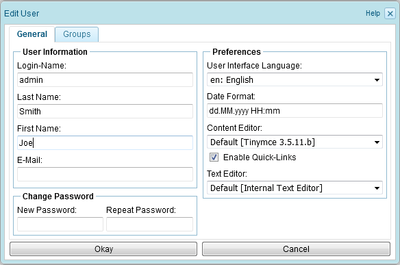

4.3.4. Adding a tab
A plug-in can add new tabs to the user interface. Currently the plug-in API allows to add tabs to
- the user profile dialog
- the publishing workspace
- the administration workspace
To add a new tab at one of these positions, the org.docma.plugin.web.WebUserSession interface provides the methods:
- addUserTab
- addPublishingTab
- addAdminTab
In Section 4.3.3, “Adding a dialog” we have added a configuration dialog to our plug-in that allows to configure the text to be displayed in the "Hello World" message box. This configuration affects all users, as the configured text is stored in a file within the plug-in directory (which is the same for all users). As an example of adding a tab, we will change the plug-in and store the configured text as a user property. For this we will add a new tab to the user profile dialog.
In Docmenta a user can configure user-specific settings by clicking the user profile button:

This opens the user profile dialog:

Figure 4.3.17. The user profile dialog
By default, the user profile dialog contains two tabs: "General" and "Groups". In our example we want to insert an additional tab that allows to configure the user-specific text to be displayed in the "Hello World" message box. Therefore the content of the tab shall just contain an input box and a label. As the tab is part of the ZK user interface, the content of the tab has to be defined in the ZK User Interface Markup Language (ZUML). Detailed information on this language can be found on the ZK homepage. Following the ZUML file that defines the content of our tab:
1
2
3
4
| <hbox align="center">
<label>${labels.my_plugin.config_message_label}:</label>
<textbox id="my_plugin_message_textbox" maxlength="100" hflex="1" />
</hbox>
|
Listing 4.3.18. my_user_tab.zul
For a description of the hbox, label and textbox elements see the example given in Section 4.3.3, “Adding a dialog”.
Extending the Plug-in class
Now, we extend the example plug-in already described in Section 4.3.2, “Adding menu items”. The extended plug-in shall add a tab to the user profile dialog. The added tab shall display the elements defined in the my_user_tab.zul file shown above. When the user closes the user profile dialog, the text that has been entered in the tab's text box shall be stored as user-specific property. Following listing shows the extended plug-in. The line-numbers of the added and changed lines are highlighted:
1
2
3
4
5
6
7
8
9
10
11
12
13
14
15
16
17
18
19
20
21
22
23
24
25
26
27
28
29
30
31
32
33
34
35
36
37
38
39
40
41
42
43
44
45
46
47
48
49
50
51
52
53
54
55
56
57
58
59
60
61
62
63
64
65
| package myexample;
import org.docma.plugin.web.*;
import org.zkoss.zul.Textbox;
public class MyMenuPlugin extends DefaultWebPlugin
implements UIListener
{
static final String MY_ITEM_ID = "my_plugin_menu_item";
static final String MY_TAB_ID = "my_plugin_user_tab";
static final String MY_USER_PROP = "my_plugin_message";
@Override
public void onInitMainWindow(WebPluginContext ctx,
WebUserSession sess)
{
// Add context menu item
String item_label = sess.getLabel("my_plugin.show_hello");
String icon_url = "plugins/my_plugin/images/my_icon.png";
sess.addMenuItem(ctx, "treemenu", MY_ITEM_ID, item_label,
icon_url, "treemenuExtra", true);
// Add user dialog tab
String tab_title = sess.getLabel("my_plugin.user_tab_title");
sess.addUserTab(ctx, MY_TAB_ID, tab_title, -1,
"plugins/my_plugin/my_user_tab.zul");
sess.setUIListener(ctx, this);
}
@Override
public void onEvent(UIEvent evt)
{
WebUserSession sess = evt.getSession();
String targetId = evt.getTargetId();
Textbox box =
(Textbox) sess.getTabComponent(MY_TAB_ID,
"my_plugin_message_textbox");
// User dialog is opened
if ("UserDialog".equals(targetId) && evt.isOpen()) {
// Show currently configured message in textbox
box.setValue(getMessage(sess));
return;
}
// User dialog is closed by clicking the "Okay" button
if ("UserDialogOkayBtn".equals(targetId) && evt.isClick()) {
// Save the entered text as user property
sess.getUser().setProperty(MY_USER_PROP, box.getValue());
return;
}
// Menu item is clicked
if (MY_ITEM_ID.equals(targetId) && evt.isClick()) {
sess.showMessage(getMessage(sess));
}
}
private String getMessage(WebUserSession sess)
{
String msg = sess.getUser().getProperty(MY_USER_PROP);
return (msg == null) ? "" : msg;
}
}
|
Listing 4.3.19. MyMenuPlugin.java (user tab example)
First, two new constants are defined. The My_TAB_ID constant is used as identifier for the new tab. In the plug-in API each added tab needs a unique identifier. To ensure that the identifier is unique, it is recommended to use a string that includes the plug-in identifier as prefix (in our example: "my_plugin").
The MY_USER_PROP constant is the property name of the user property that stores the text that the user has entered in the text field.
In the onInitMainWindow method two lines are added that insert the new tab to the user-dialog. First, the label of the tab is loaded from the plug-ins's locale.properties file, by calling sess.getLabel("my_plugin.user_tab_title"). Then the line
sess.addUserTab(ctx, MY_TAB_ID, tab_title, -1,
"plugins/my_plugin/my_user_tab.zul");
"plugins/my_plugin/my_user_tab.zul");
adds a new tab with identifier MY_TAB_ID to the user-dialog. The third argument is the label to be displayed (here: tab_title). The fourth argument defines the insert position of the tab. If the value -1 is passed, then the tab is just added after the extisting tabs. The last argument defines the path to the ZUML file, in our example, the path to the my_user_tab.zul file.
The main extensions to our plug-in are in the onEvent method. To get our plug-in working we have to react to following three events:
- The user opens the user-dialog:
Initialize the input field of the added tab with the value stored in the MY_USER_PROP user property. - The user closes the user-dialog by clicking the "OK" button:
Store the text entered in the input field of the added tab in the MY_USER_PROP user property. - The user clicks the menu item that has been added to the context menu:
Show the text stored in the the MY_USER_PROP user property.
Initializing the input field
In Docmenta, the identifier of the user-dialog is "UserDialog". Events that indicate the opening of a component have the name "onOpen". Therefore, to identify the event that indicates the opening of the user-dialog, it has to be checked that the event's target identifier equals "UserDialog" and the event name is "onOpen". Exactly this is done by the following expression. Note that evt.isOpen() is just a shortcut for evt.getName().equals("onOpen"):
"UserDialog".equals(targetId) && evt.isOpen()
If the expression is true, then the input field which is identified by the ID "my_plugin_message_textbox" needs to be initialized (see the file my_user_tab.zul above). A component that is defined in the tab's ZUML file can be retrieved by calling the getTabComponent method of the user session. The first argument passed to this method has to be the identifier of the tab that contains the component (here: MY_TAB_ID). The second argument has to be the identifier of the component that shall be retrieved. If a component with this ID exists, then this method returns an object that represents the corresponding ZUML component (otherwise null is returned). In the ZK framework the <textbox .../> component is represented by the Java class org.zkoss.zul.Textbox. More information on ZK can be found on the ZK homepage. After having retrieved the textbox, the input field can be filled by calling the the component's setValue method. In our example, this is done by following line:
box.setValue(getMessage(sess));
This statement fills the input field with the value returned by the getMessage method. The getMessage method retrieves the current value of the MY_USER_PROP user property. User properties can be retrieved and set through the getProperty and setProperty methods of the org.docma.User class. An instance of this class that represents the owner of the session is returned by the session's getUser method. Therefore, following expression retrieves the MY_USER_PROP user property:
sess.getUser().getProperty(MY_USER_PROP)
This is all that needs to be done for initializing the tab's input field.
Note: Tab selection events
Instead of initializing the input field on opening of the user-dialog, the initialization could be deferred to the time when user selects the tab, because until then the tab's component are not visible. For this the if statement that initializes the input field would have to be changed as follows:
if (MY_TAB_ID.equals(targetId) && evt.isSelect()) {
box.setValue(getMessage(sess));
return;
}
box.setValue(getMessage(sess));
return;
}
Be aware that in this case, the value in the input field must not be stored, unless the tab has been selected before!
Storing the entered text
When user closes the dialog by clicking the "OK" button, the entered text needs to be stored as user property. In Docmenta the "OK" button of the user-dialog is identified by the ID "UserDialogOkayBtn". Therefore, the event that indicates the clicking of the "OK" button can easily be recognized by the expression
"UserDialogOkayBtn".equals(targetId) && evt.isClick()
The text that is contained in the input field is returned by the getValue method of the org.zkoss.zul.Textbox component. Therefore, following statement stores the entered text as user property with name MY_USER_PROP:
sess.getUser().setProperty(MY_USER_PROP, box.getValue())
Reacting on menu item clicks
The code that reacts on menu item clicks is nearly identical to the code given in Section 4.3.2, “Adding menu items”, except that this time the displayed text is the value of the user property MY_USER_PROP, instead of a text retrieved from the locale.properties file:
sess.showMessage(getMessage(sess))
Creating the plug-in package
Before creating the plug-in package, we have to add the my_plugin.user_tab_title property to the locale.properties file. Following an example file that could be used for our plug-in:
my_plugin.description = A simple Hello World Plug-in
my_plugin.show_hello = Show Hello
my_plugin.user_tab_title = Hello
Listing 4.3.20. locale.properties (user tab example)
We can now create the package as described in Chapter 4.2, Creating a plug-in package. The content of the package should be as follows:
Figure 4.3.18. Package structure of the user tab plug-in
Testing the Plug-in
After installation of the plug-in, the user-dialog should display a "Hello" tab:
Figure 4.3.19. The 'Hello' tab
The user can select this tab and enter some text. Closing the dialog by clicking "OK" saves the entered text. Each user can configure his own text, because the text is stored as user property. After having configured a text, clicking the "Hello World" menu item opens a message box that displays the user-specific text:
")
Figure 4.3.20. Message box (user-specific text)
Resizing the user-dialog
You might notice that in Figure 4.3.19, “The 'Hello' tab”, there is a lot of space between the input field and the buttons at the bottom of the dialog. This is because the initial size of the user-dialog is larger than the space required by our components. If you want to avoid this, or if you need more space than provided by the initial dialog size, then you could insert following code in the onEvent method:
if (MY_TAB_ID.equals(targetId) && evt.isSelect()) {
Window win = (Window) sess.getDialog("UserDialog");
win.invalidate();
}
Window win = (Window) sess.getDialog("UserDialog");
win.invalidate();
}
The if condition
MY_TAB_ID.equals(targetId) && evt.isSelect()
evaluates to true, if the tab identified by MY_TAB_ID receives an "onSelect" event. This indicates that the user has selected the tab. In this case the method getDialog of the WebUserSession object is called, which returns an instance of the org.zkoss.zul.Window class. This instance represents the dialog identified by the passed ID ("UserDialog"). Invoking the invalidate method of this instance causes the height of the user-dialog to be adapted to the actual space needed by the components of the selected tab. However, the width of the dialog is fixed and does not change automatically.
Most of the times it is sufficient to adapt the height and leave the width of the dialog unchanged. Though, if the width of the dialog needs to be changed as well, then additionally the setWidth method of the dialog instance has to be called. For example, to adapt the height of the dialog to fit the height of the visible components and to set a width of 300 pixels, following code could be used:
if (MY_TAB_ID.equals(targetId) && evt.isSelect()) {
Window win = (Window) sess.getDialog("UserDialog");
win.setWidth("300px");
win.invalidate();
}
Window win = (Window) sess.getDialog("UserDialog");
win.setWidth("300px");
win.invalidate();
}
This code adapts the width and the height of the user-dialog, as soon as the user selects the tab.